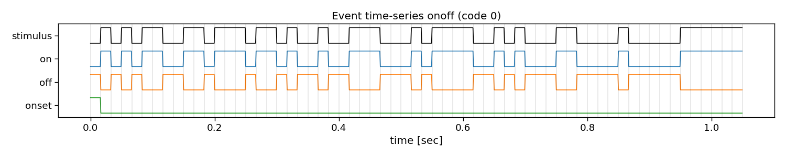
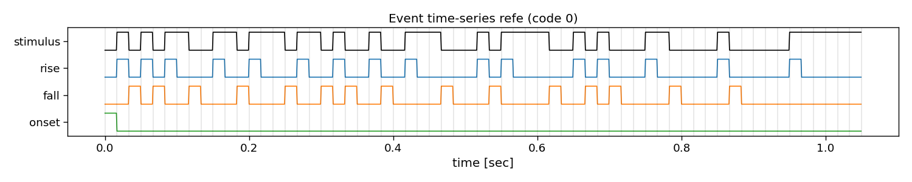

Note
Go to the end to download the full example code
Reconvolution events
This tutorial shows the basic building block of the reconvolution approach (see [1] and [2]) that is implemented in the PyntBCI library for analysing code-modulated responses. This tutorial generates an arbitrary code (here an m-sequence) and shows different kinds of event definitions.
References
import os
import matplotlib.pyplot as plt
import numpy as np
import seaborn
import pyntbci
seaborn.set_context("paper", font_scale=1.5)
The codes
PyntBCI contains a codes module with several functions that create various well-known noise-codes. Here we generate an m-sequence.
# Generate an m-sequence
V = pyntbci.codes.make_m_sequence()
n_classes, n_samples = V.shape
print("V shape: ", V.shape, "(codes, samples)")
# Visualize codes
fr = 60 # the monitor refresh rate in Hz
Vup = V.repeat(20, axis=1) # upsample to better visualize the sharp edges
plt.figure(figsize=(15, 3))
plt.plot(np.arange(Vup.shape[1]) / (20 * fr), 2 * np.arange(n_classes) + Vup.T)
for i in range(1 + int(V.shape[1])):
plt.axvline(i / fr, c="k", alpha=0.1)
plt.yticks(2 * np.arange(n_classes), np.arange(n_classes))
plt.xlabel("time [sec]")
plt.ylabel("code")
plt.title("Code time-series")
plt.tight_layout()
V shape: (1, 63) (codes, samples)
The event matrix
In reconvolution, sequences are decomposed into individual events. Reconvolution then learns a separate evoked response for each of these events. The event definition can be manually set. An event that is commonly used is the dur (duration) event, which defines an event for each run-length of ones in a sequence. There are many other potential events that can be used, such as id (identity), on, off, onoff (on and off), re (rising edge), fe (falling edge), and refe (rising and falling edge, contrast). Here, we show what these decompositions look like in more detail.
events = ["id", "dur", "on", "off", "onoff", "re", "fe", "refe"] # the event definitions
i_class = 0 # the class to visualize
for event in events:
print(event)
# Create event matrix
E, events = pyntbci.utilities.event_matrix(V, event=event, onset_event=True)
print("\tE shape:", E.shape, "(classes x events x samples)")
print("\tEvents:", ", ".join([str(event) for event in events]))
# Visualize event time-series
fig, ax = plt.subplots(1, 1, figsize=(15, 3))
pyntbci.plotting.eventplot(V[i_class, :], E[i_class, :, :], fs=fr, ax=ax, events=events)
ax.set_title(f"Event time-series {event} (code {i_class})")
plt.tight_layout()
# plt.show()
- 
- 
id
E shape: (1, 2, 63) (classes x events x samples)
Events: id, onset
dur
E shape: (1, 6, 63) (classes x events x samples)
Events: 1, 2, 3, 4, 6, onset
on
E shape: (1, 2, 63) (classes x events x samples)
Events: on, onset
off
E shape: (1, 2, 63) (classes x events x samples)
Events: off, onset
onoff
E shape: (1, 3, 63) (classes x events x samples)
Events: on, off, onset
re
E shape: (1, 2, 63) (classes x events x samples)
Events: rise, onset
fe
E shape: (1, 2, 63) (classes x events x samples)
Events: fall, onset
refe
E shape: (1, 3, 63) (classes x events x samples)
Events: rise, fall, onset
Total running time of the script: (0 minutes 1.127 seconds)